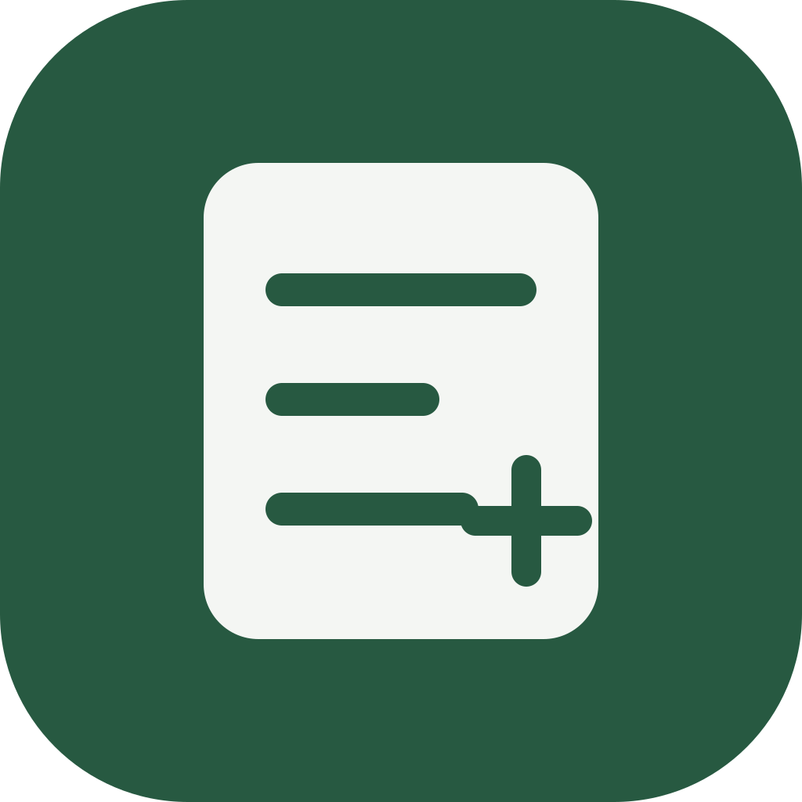

一笔日常，轻轻记下。
支出、收入、转账，各有各的位置。标签可以选，也可以不选，按自己的习惯来。

智账日常有数，生活有余。 获取应用给日常留一本简单的账
记下收支，理清账户，让钱的去向心里有数。
一个留在你设备里的小账本，陪你慢慢积累。
Android · macOS · Windows手机端叫「智账」，电脑端叫「简账」
可点击切换页面 · 全部为虚构数据
不必补齐过去，也不必记得完美。
从今天的一笔开始，就很好。
FOR THE EVERYDAY
把复杂留给计算，
把简单留给每天的你。
支出、收入、转账，各有各的位置。标签可以选，也可以不选，按自己的习惯来。
现金、银行卡、理财和信用卡，一起看清资产与负债。不再使用的账户可以归档，留下历史。
看看这个月的收支与结余，也能快速跳到过去的月份。每一笔记录，都有迹可循。
A LITTLE ROOM FOR YOUR PROGRESS
让抽象的数字，有一点可爱的形状。
金块、金币、金粒，装着每一次认真生活的痕迹。
展示随净资产变化，不代表投资收益或实物黄金。
自然光，温柔地照着每一点进步。
手机 → 电脑接收方确认后，先备份原账本，再完整替换。
手动整本传输，不自动合并。这里只是流程示意。
MAKE ROOM FOR A LITTLE CLARITY
手机随手记，电脑慢慢理。选一台你常用的设备。
智账 · Android 7.0+ / arm64
简账 · Apple 芯片
简账 · x64 测试版
目前处于测试阶段，安装包尚未公开发布。你也可以查看源代码与项目说明 ↗
A FEW THINGS TO KNOW
把关心的事情，说清楚一点。
是同一个记账项目。Android 端叫「智账」，macOS 和 Windows 端叫「简账」，共用记账、资产计算和备份规则。各设备保存自己的账本，可以手动迁移。
不需要。账本保存在应用所在的设备中，没有云端账本或自动云同步。你可以主动导出 JSON 备份，或在局域网里传输。JSON 备份文件是明文，请妥善保管。
不会自动同步或合并。两端连接同一局域网，在电脑开启一次性连接，手机扫码或粘贴连接码后，选择哪端覆盖哪端。接收方确认后，先自动备份原账本，再整本替换。连接十分钟后失效。
可以选择归档或删除。归档保留历史与余额，余额仍计入总资产，之后可以恢复；彻底删除会移除账户和关联流水、盘点，执行前自动备份整本账本。涉及转账或还款时，另一个账户的余额也会重新计算。
根据净资产展示：一万元是一块金块，一千元是一枚金币，一百元是一颗金粒，余下的零头显示为金粉。它只是金额的可视化，不代表持有实物黄金；零或负净资产时显示空金库。
目前提供 Android、macOS 和 Windows 构建，暂未提供 iPhone 版本或独立的在线记账服务。这个官网用于介绍产品，页面中的交互是虚构数据演示，不连接真实账本。
每一笔，都由你记录。
每一点余裕，都值得珍惜。